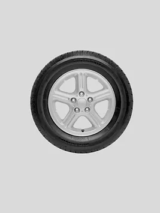

Aluminum

Ціна: $120
Країна: США
Постачальник: DRIVILUX
Кількість в наявності: 190
Опис:
Шина Aluminum - це високоякісний вибір для тих, хто шукає поєднання міцності та ефективності. Ці
шини мають особливу конструкцію, яка забезпечує надійність і комфорт під час керування.
Особливості:
Міцність і довговічність: Виготовлена з високоякісних матеріалів, шина Aluminum
відзначається міцністю і стійкістю до зносу, що робить її надійним вибором для тривалих
подорожей і щоденного використання.
Комфортна поїздка: Спеціальна конструкція протектора і амортизаційна система забезпечують
гладку і комфортну поїздку, навіть на нерівних дорогах.
Ефективна експлуатація: Шина Aluminum відзначається оптимальною ефективністю пального, що
робить її економічним і практичним вибором для власників автомобілів.
Характеристики:
Розмір: 205/55R16
Індекс навантаження: 91
Індекс швидкості: H
Сезонність: Універсальна (для всіх сезонів)